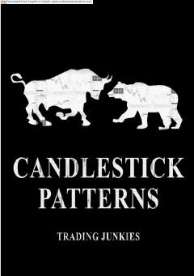

SMTreydingda qo'llaniladigan asosiy shamdon modellari va ularning tahlili bo'yicha qo'llanma.
Ushbu qo'llanma treydingda qo'llaniladigan asosiy shamdon (candlestick) modellarini tushuntiradi. Unda Marubozu, Doji, Spinning Top kabi grafik shakllar va ularning bozor tendensiyalarini aniqlashdagi ahamiyati bayon etilgan.